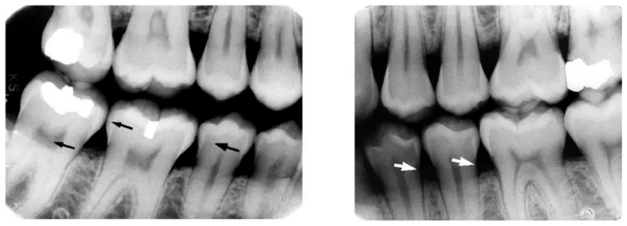

نسخه استخراجشده؛ ترجمه یا تأیید علمی انجام نشده است. وضعیت: captured
قاعدهی بنیادی پوسیدگی روی تصویر: رادیوگرافی از دست رفتن مواد معدنی را نشان میدهد، نه فعالیت را. و همین است که دو محدودیت همیشگی را میسازد: کمبرآوردی عمق ضایعه، و ناتوانی در تشخیص فعال از متوقفشده.

و آنچه در تفسیر پریودنتال باید ثابت بماند: ارزیابی ارتفاع و شکل کرست، الگوی از دست رفتن استخوان (افقی در برابر عمودی)، درگیری فورکا، و فضای پریودنتال و لامینا دورا. و همیشه به یاد داشته باش که رادیوگرافی وضعیت گذشتهی بافت را نشان میدهد، نه فعالیت کنونی بیماری را.
پرسشهای همیشگی سینوس: آیا کدورت موضعی است یا کامل؟ آیا سطح مایع-هوا هست؟ آیا کف سینوس ناپیوسته شده؟ و مهمتر از همه: آیا منشأ دندانی است؟
و تمایز کلیدی: ضخیم شدن مخاطی شایع و اغلب بیاهمیت است؛ ولی ناپیوستگی کف سینوس با یک ضایعهی پریاپیکال زیرین، داستان دیگری است.
و تفکیکی که بارها به کارت میآید: برای اجزای استخوانی — تحلیل، اسکلروز، استئوفیت، تخت شدن کندیل — CBCT روش انتخابی است؛ ولی برای دیسک و بافت نرم، MRI. هیچکدام جای دیگری را نمیگیرد.
در غدد بزاقی، پرسش نخست این است که مسئله انسدادی است یا التهابی-تخریبی یا توده؛ و پاسخ، روش تصویربرداری را تعیین میکند.
و در کلسیفیکاسیون بافت نرم، یک عادت ذهنی بساز: نخست محل آناتومیک دقیق را تعیین کن، سپس شکل و توزیع، و تنها بعد از آن نامگذاری کن. بیشتر خطاهای این حوزه از نامگذاری پیش از جاییابی میآید.
نوع سؤال: ساخت کلمه · 9 خانه
حروف منبع: ت · ی · و · ی · پ · ا · س · ن · گ